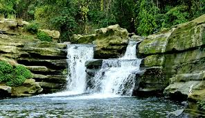
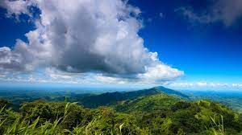
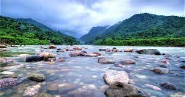
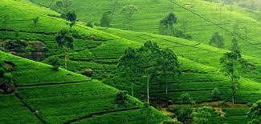

cox bazaer travell of my last winter vacation
author: travell lover Sayem
cox bazar is the longgest sea beach in the world. it is about 120km
long. it is so much beautiful. in last december coxbazar was so crowded
that alu vorta vat was priced at 500 tk.cox bazar is the longgest sea
beach in the world. it is about 120km long. it is so much beautiful. in
last december coxbazar was so crowded that alu vorta vat was priced at
500 tk.cox bazar is the longgest sea beach in the world. it is about
120km long. it is so much beautiful. in last december coxbazar was so
crowded that alu vorta vat was priced at 500 tk.cox bazar is the
longgest sea beach in the world. it is about 120km long. it is so much
beautiful. in last december coxbazar was so crowded that alu vorta vat
was priced at 500 tk.


travell to bandarban
author:travell lover Sayem
bandarban is a very beautiful place to visite . there are so many big
big hills . in the hills the scenery of clouds are so much charming .
bandarban is a very beautiful place to visite . there are so many big
big hills . in the hills the scenery of clouds are so much charming .
bandarban is a very beautiful place to visite . there are so many big
big hills . in the hills the scenery of clouds are so much charming .
bandarban is a very beautiful place to visite . there are so many big
big hills . in the hills the scenery of clouds are so much charming .
bandarban is a very beautiful place to visite . there are so many big
big hills . in the hills the scenery of clouds are so much charming .


travell to sylhet
author: travell lover Sayem
sylhet is also very beautiful place with wonderful tea garden
,hill,river etc. but most of the revier is in the part of india it is so
annowing and discusting matter.sylhet is also very beautiful place with
wonderful tea garden ,hill,river etc. but most of the revier is in the
part of india it is so annowing and discusting matter.vvsylhet is also
very beautiful place with wonderful tea garden ,hill,river etc. but most
of the revier is in the part of india it is so annowing and discusting
matter.sylhet is also very beautiful place with wonderful tea garden
,hill,river etc. but most of the revier is in the part of india it is so
annowing and discusting matter.sylhet is also very beautiful place with
wonderful tea garden ,hill,river etc. but most of the revier is in the
part of india it is so annowing and discusting matter.

